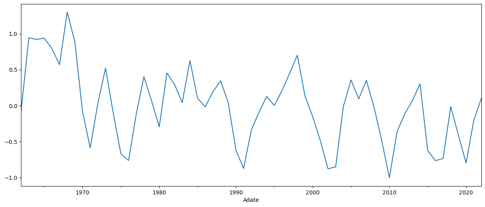

from __future__ import annotations
from typing import List
from pathlib import Path
import os
from scipy.stats import norm
import pandas as pd
import numpy as np
import pandasmore as pdm
from finsets.wrds import wrds_apiGreenwood and Hanson (2013)
Credit market sentiment measure from Greenwood and Hanson (2016)
DATA_REPO = Path(os.getenv('DATA_REPO')) #path to folder with all needed datasets (don't need it if you will be downloading them)
COMPA_PATH = DATA_REPO/'finsets/wrds/compa_ccm/processed.pkl.zip' #Compustat annual: 'dtdate','dltt','dlc'
COMPFT_PATH = DATA_REPO/'finsets/wrds/compa_ccm/features.pkl.zip' #Compustat annual: 'debtiss_tot_2la'
CRSPM_PATH = DATA_REPO/'finsets/wrds/crspm/processed.pkl.zip' #Crsp monthly: 'prc','shrout','exchcd', 'siccd'
CRSPFT_PATH = DATA_REPO/'finsets/wrds/crspm/features.pkl.zip' #CRSP monthly features: 'retvol12', 'lbhret12'
OUTPUT_PATH = DATA_REPO/'finsets/papers/greenwood_hanson/features.pkl.zip'
FREQ = 'A'
START_DATE = 1962
END_DATE = None
ENTITY_ID_IN_CLEAN_DSET = 'permno'
TIME_VAR_IN_CLEAN_DSET = f'{FREQ}date'input_data
input_data ()
calculate_default_prob
calculate_default_prob (df:pandas.core.frame.DataFrame=None)
df = calculate_default_prob()
df| dtdate | dltt | dlc | sic_full | debtiss_tot_2la | Mdate | ret | prc | shrout | exchcd | ... | siccd | retvol12 | lbhret12 | F | E | V | sigmaE | sigmaV | DD | EDF | ||
|---|---|---|---|---|---|---|---|---|---|---|---|---|---|---|---|---|---|---|---|---|---|---|
| permno | Adate | |||||||||||||||||||||
| 10000 | 1986 | 1986-10-31 | 0.058 | 0.968 | 3942 | NaN | 1986-10 | -0.242424 | -0.781250 | 3843.0 | 3 | ... | 3990 | NaN | NaN | 0.9970 | 3.002344e+00 | 3.999344e+00 | NaN | NaN | NaN | NaN |
| 10001 | 1986 | 1986-06-30 | 2.946 | 0.343 | 4924 | NaN | 1986-06 | -0.013069 | -6.125000 | 985.0 | 3 | ... | 4920 | NaN | NaN | 1.8160 | 6.033125e+00 | 7.849125e+00 | NaN | NaN | NaN | NaN |
| 1987 | 1987-06-30 | 2.750 | 0.377 | 4924 | -0.035615 | 1987-06 | 0.051429 | 5.875000 | 991.0 | 3 | ... | 4920 | 0.050066 | 0.023884 | 1.7520 | 5.822125e+00 | 7.574125e+00 | 0.173433 | 0.154911 | 9.527182 | 8.080565e-22 | |
| 1988 | 1988-06-30 | 2.555 | 0.325 | 4924 | -0.022343 | 1988-06 | -0.012039 | 6.250000 | 992.0 | 3 | ... | 4920 | 0.048893 | 0.140535 | 1.6025 | 6.200000e+00 | 7.802500e+00 | 0.169369 | 0.153549 | 11.147066 | 3.700316e-29 | |
| 1989 | 1989-06-30 | 7.370 | 0.185 | 4924 | 0.483255 | 1989-06 | 0.017143 | 7.000000 | 1001.0 | 3 | ... | 4920 | 0.030694 | 0.199810 | 3.8700 | 7.007000e+00 | 1.087700e+01 | 0.106326 | 0.095743 | 12.832551 | 5.387843e-38 | |
| ... | ... | ... | ... | ... | ... | ... | ... | ... | ... | ... | ... | ... | ... | ... | ... | ... | ... | ... | ... | ... | ... | ... |
| 93436 | 2018 | 2018-12-31 | 9454.055 | 2629.460 | 3711 | 0.013900 | 2018-12 | -0.050445 | 332.799988 | 172602.0 | 3 | ... | 9999 | 0.145411 | 0.068893 | 7356.4875 | 5.744194e+04 | 6.479843e+04 | 0.503720 | 0.466506 | 4.578244 | 2.344479e-06 |
| 2019 | 2019-12-31 | 11326.456 | 2070.000 | 3711 | 0.096660 | 2019-12 | 0.267897 | 418.329987 | 181062.0 | 3 | ... | 9999 | 0.167923 | 0.257001 | 7733.2280 | 7.574366e+04 | 8.347689e+04 | 0.581704 | 0.545919 | 4.555673 | 2.610906e-06 | |
| 2020 | 2020-12-31 | 10888.000 | 2459.000 | 3711 | 0.060655 | 2020-12 | 0.243252 | 705.669983 | 959854.0 | 3 | ... | 9999 | 0.303262 | 7.434370 | 7903.0000 | 6.773402e+05 | 6.852432e+05 | 1.050532 | 1.042021 | 10.896128 | 6.013348e-28 | |
| 2021 | 2021-12-31 | 6916.000 | 1957.000 | 3711 | 0.041152 | 2021-12 | -0.076855 | 1056.780029 | 1033508.0 | 3 | ... | 9999 | 0.149601 | 0.497556 | 5415.0000 | 1.092191e+06 | 1.097606e+06 | 0.518233 | 0.516562 | 10.987744 | 2.188649e-28 | |
| 2022 | 2022-12-31 | 3761.000 | 1987.000 | 3711 | 0.090679 | 2022-12 | -0.367334 | 123.180000 | 3157752.0 | 3 | ... | 9999 | 0.183925 | -0.650315 | 3867.5000 | 3.889719e+05 | 3.928394e+05 | 0.637137 | 0.632924 | 5.956763 | 1.286413e-09 |
260540 rows × 21 columns
calculate_cms
calculate_cms (df:pandas.core.frame.DataFrame=None)
cms = calculate_cms()cms['1962':].plot(figsize=(15,6));